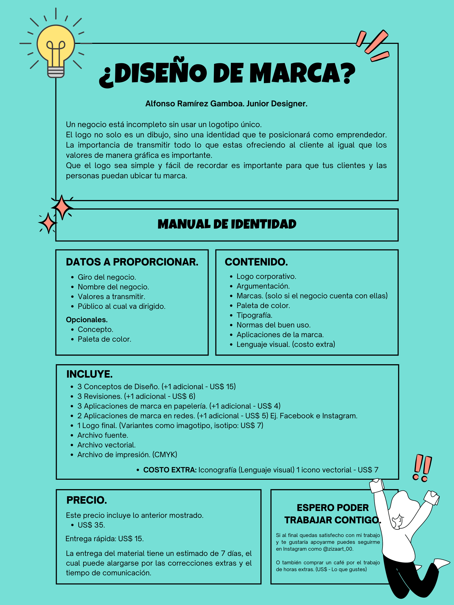
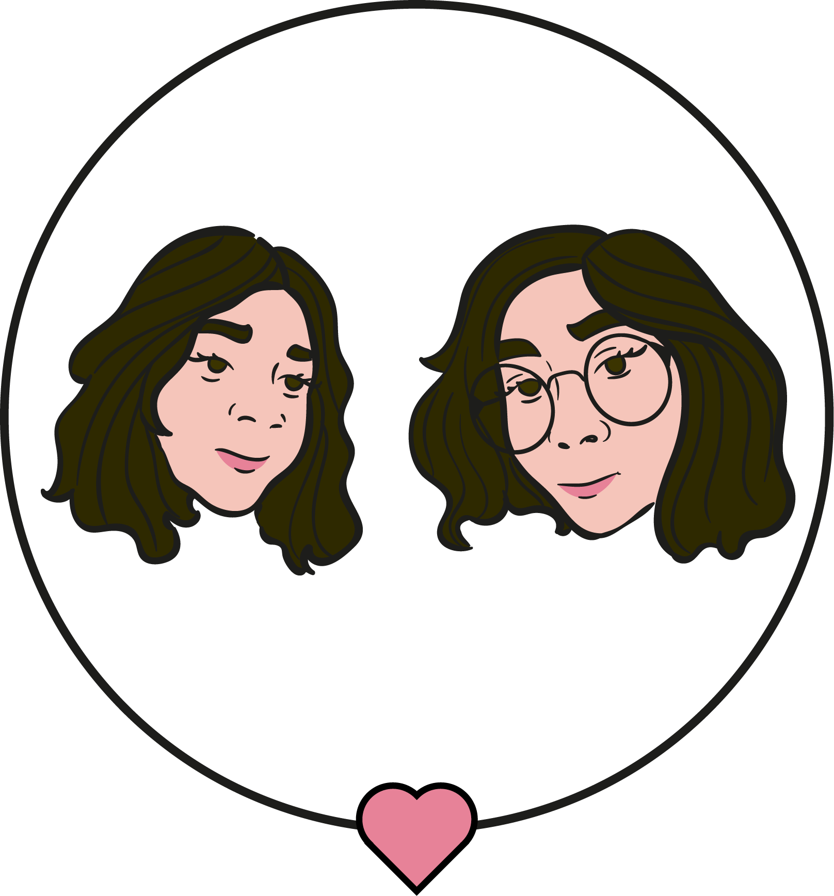
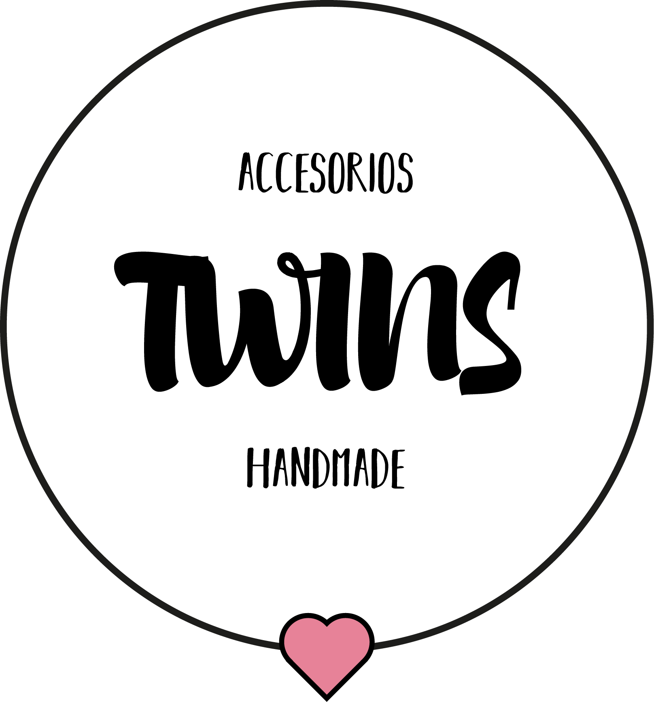
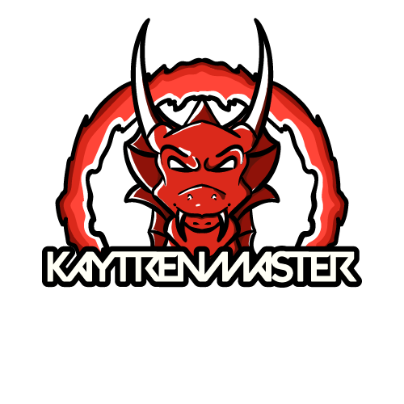

Como primera instancia se coloca el archivo de que muestra el precio de mi trabajo.
Siento que es un precio justo por las horas al igual que por el conocimiento y pos las herramientas que empleo para poder realizar los trabajos.
Como se puede observar hay cosas que pueden ser agregadas por un costo extra.
Lo que se presenta a continuación es un isotipo de una bisutería, la idea fue del cliente, ella quería que se mostrara su cara y la de su asociada para que se diera a entender el nombre del negocio el cual es llamado "Twins", de igual manera los colores fueron dicho por el cliente. Además esta fue la primera vez que trabaje para un negocio.
A continuación tambien se presentan el logotipo y el imagotipo.
 Este isotipo lo realice para un amigo, ya que quería poner algo en especial de foto de perfil, al final él tomo la desición de que fuera un dragon, la igual después de mostrarle difernetes estilos de letras y colores decidio quedarse con el que se muestra a continuación.
